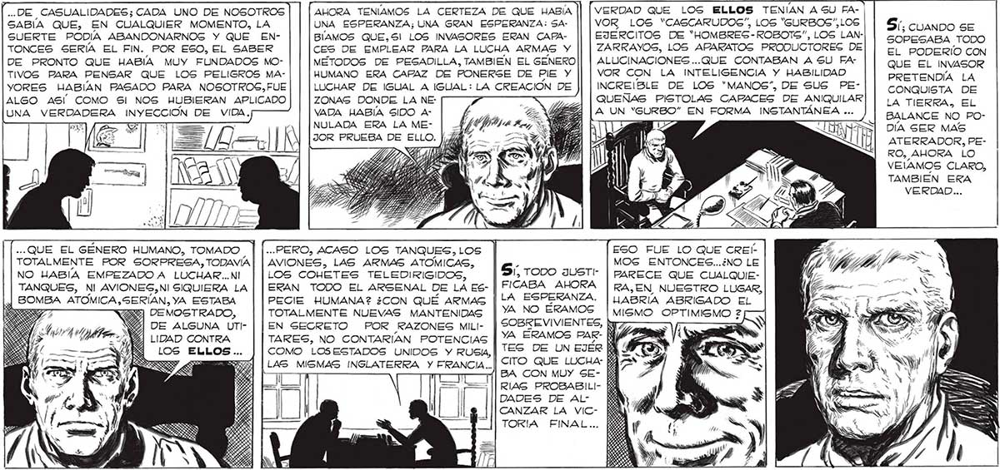
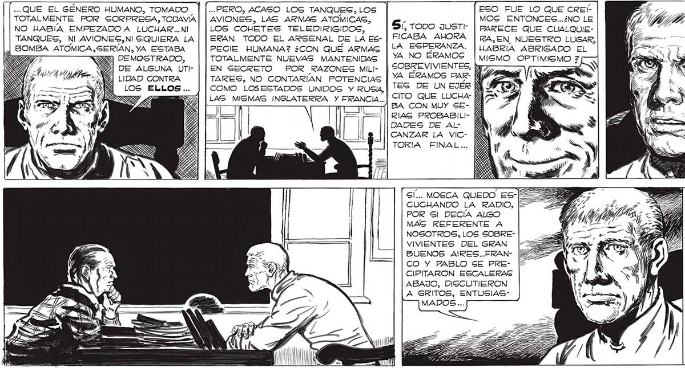

323 VERDAD QUE LOS ELLOS TENÍAN A SU FAVOR LOG “CASCARUDOS”, LOS “SURBOS”,LOS EJERCITOS DE “HOMBRES-ROBOTS", LOS LANZARRAYOS, LOS APARATOS PRODUCTORES DE ALUCINACIONES ...QUE CONTABAN A SU FAVOR CON LA INTELIGENCIA Y HABILIDAD INCREIBLE DE LOS “MANOS”, DE SUS PEQUEÑAS PISTOLAS CAPACES DE ANIQUILAR A UN “GURBO” EN FORMA INSTANTÁNEA ... .DE CASUALIDADES; CADA UNO DE NOSOTROS AHORA TENÍAMOS LA CERTEZA DE QUE HABÍA SABÍA QUE, EN CUALQUIER MOMENTO, LA UNA ESPERANZA; UNA GRAN ESPERANZA: SASUERTE PODÍA ABANDONARNOSG Y QUE EN- BÍAMOS QUE,S! LOS INVASORES ERAN CAPATONCES SERÍA EL FIN. POR ESO, EL SABER CES DE EMPLEAR PARA LA LUCHA ARMAS Y DE PRONTO QUE HABIA MUY FUNDADOS MO- METODOS DE PESADILLA, TAMBIEN EL GENERO TIVOS PARA PENSAR QUE LOS PELIGROS MA- HUMANO ERA CAFAZ DE PONERKRSE DE PIE Y YORES HABIAN PASADO PARA NOSOTROS,FUE LUCHAR DE IGUAL A IGUAL: LA CREACION DE ALGO ASÍ COMO SI NOS HUBIERAN APLICADO ZONAS DONDE LA NE: UNA VERDADERA INYECCIÓN DE VIDA, VADA HABÍA SIDO ANULADA ERA LA MEJOR PRUEBA DE ELLO. 5: CUANDO SE SOPESABA TODO EL PODERÍO CON QUE EL INVASOR PRETENDÍA LA CONQUISTA DE LA TIERRA, EL BALANCE NO PODÍA SER MAS ATERRADOR, PERO, AHORA LO VEAMOS CLARO, TAMBIEN ERA VERDAD... ..QUE EL GÉNERO HUMANO, TOMADO | |..PERO, ACASO LOS TANQUES, LOS ESO FUE LO QUE CREÍ TOTALMENTE POR SORPRESA, TODAVÍA | | AVIONES, LAS ARMAS ATOMICAS, | gm. MOS ENTONCES...¿NO LE NO HABIA EMPEZADO A LUCHAR..NI | | LOS COHETES TELEDIRIGIDOS, PARECE QUE CUALQUIETANQUES, NI AVIONES,NI SIQUIERA LA | | ERAN TODO EL ARSENAL DE LA ESBOMBA ATOMICA, SERÍAN, YA ESTABA PECIE HUMANA? ¿CON QUÉ ARMAS [LA ESPERANZA. | ABRÍA ABRIGADO EL DEMOGTRADO, TOTALMENTE NUEVAS MANTENIDAS | YA NO ÉRAMOS | mismo OPTIMISMO 2 DE ALGUNA UTI- | | EN SECRETO POR RAZONES MiLI- | SOBREVIVIENTES, hu ( LIDAD CONTRA TARES, NO CONTARÍAN POTENCIAS |] 4 ERAMOS PAR LOS ELLOS... J [COMO LOSESTADOS UNIDOS Y RUSIA, TES DE UN EJER LAS MISMAS INGLATERRA Y FRANCIA..|| <ITO QUE LUCHA: | ? BA CON MUY SERIAG PROBABILIDADES DE ALCANZAR LA VICTORIA FINAL.. DANS RIRS n= SN Gl... MOGCA QUEDO ES-P CUCHANDO LA RADIO, [55 E POR Sl DECÍA ALGO d/ GÍ) ..SOBRE DÓNDE MAS REFERENTE A ¡DE I HABIAN VISTO EL NOSOTROS, LOS SOBRE- . NIGER CAMION MAS AVIVIENTES DEL GRAN |-==>=%£ | 3% 4) DECUADO PARA BUENOS AIRES..FRAN- [42 7 0.22) N4)Y) | EL VIAJE. FAVACO Y PABLO SE PRE- [+ O LLI, SONRIENTE CIPITARON ESCALERAS dl COMO NUNCA LO ABAJO, DISCUTIERON VIERA DESDE É Í L A GRITOS, ENTUSIAS- ly y QUE COMENZO' EE Y A e Es MN ING LA INVASION, ME 3 EZ E A yl PUSO LA MANO EN EL HOMBRO...

